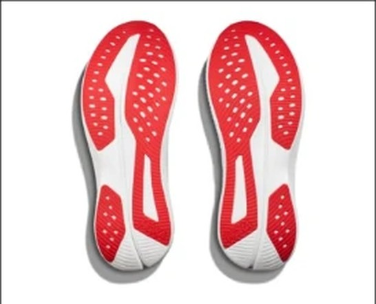
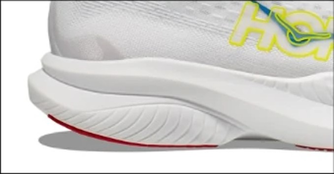

DAILY｜軽量デイリー
232gのデイリー、通気性は5点。
実測232gは、デイリーとしては軽い。前足部のエネルギーリターンは67.0%で、通気性は5段階で5。ジョグからテンポ走まで使える数字である。デイリー部門67足中19位、コスパ点は3.5。
ジョグとテンポ走を1足で済ませたい人。軽いデイリーを探している人。夏に蒸れやすい人。
厚いクッションがほしい人。費用を抑えたい人。


実測232gは、比較相手のNOVABLAST 5（254g）より22g軽い。前足部のエネルギーリターン67.0%は、REBEL v5（67.3%）とほぼ同じである。
かかとの幅は93.7mmで、ヒール剛性は4。安定性は4.0点ある。
摩耗深度は0.6mmで、推定寿命は約700km。1kmあたり約31円。
5点満点。計測値を当サイトのルールで点数にしたもの。
どの項目も3.5以上で、苦手がない。耐久性4.5、安定性4.0が高い。デイリー部門はクッションを重く見るので、クッション3.5の分だけ順位を落とした。
軽いほど短い。
短いほど安い。
| Mach 6 | NOVABLAST 5 | REBEL v5 | |
|---|---|---|---|
| 価格 | ¥22,000 | ¥15,400 | ¥16,940 |
| 実測重量 | 232g | 254g | 220g |
| 衝撃吸収（SA） | 135 | 141 | 145 |
| エネルギーリターン前足部 | 67% | 66.5% | 67.3% |
| 摩擦係数 | 0.49 | 0.53 | 0.53 |
| 摩耗深度 | 0.6mm | 0.9mm | 0.8mm |
| 性能点 | 3.79 | 4.08 | 3.89 |
| コスパ点 | 3.5 | 5 | 5 |
NOVABLAST 5は¥6,600安く、クッション（141SA）と性能点（4.08）で上回る。REBEL v5はさらに軽く、価格は¥16,940。Mach 6は通気性と安定性で2足と差をつける。
弱点はクッションと価格である。衝撃吸収は135SAで、NOVABLAST 5（141SA）やREBEL v5（145SA）より低い。¥22,000という価格に対して、性能点は比較相手の2足より低い。
価格に対して、数字ではNOVABLAST 5が上回る。HOKAの履き心地が好きな人や、通気性を重く見る人が選ぶ靴と考えたい。
靴を1足に絞りたい人に向く。普段のジョグにも、少しペースを上げる日にも使える。通気性が高いので、夏の朝ランにも合う。
軽く、蒸れず、苦手がない。価格をどう見るかで評価が分かれる1足である。
※本記事は海外ラボ（RunRepeat）の計測データとメーカー公表値、当サイトの計算をもとにした分析です。計測はUS9（約27cm）です。1kmあたりの費用は摩耗深度から推定した寿命での概算です。価格は当サイトの掲載値で、変更されている場合があります。